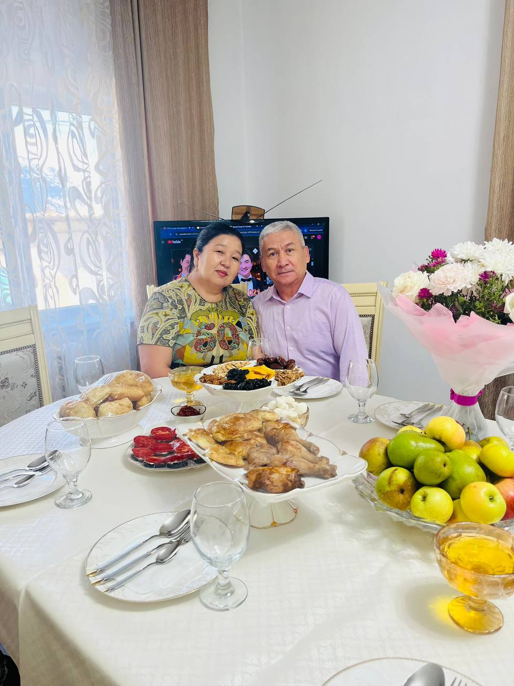
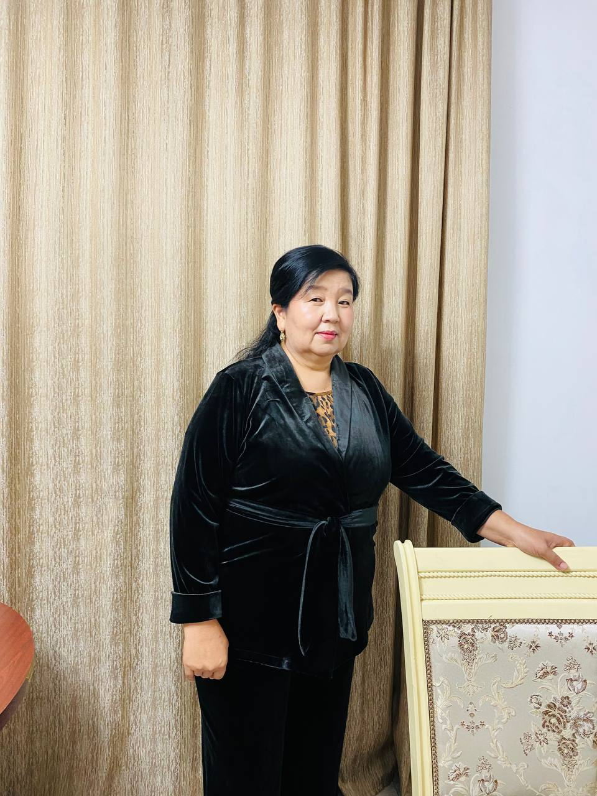
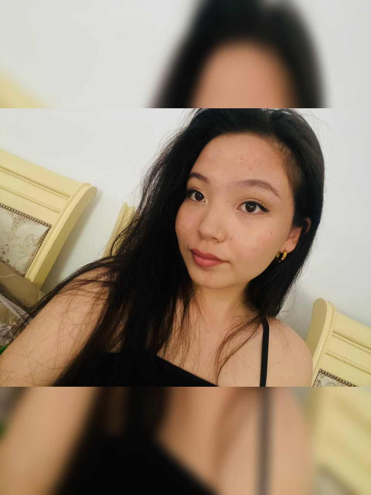
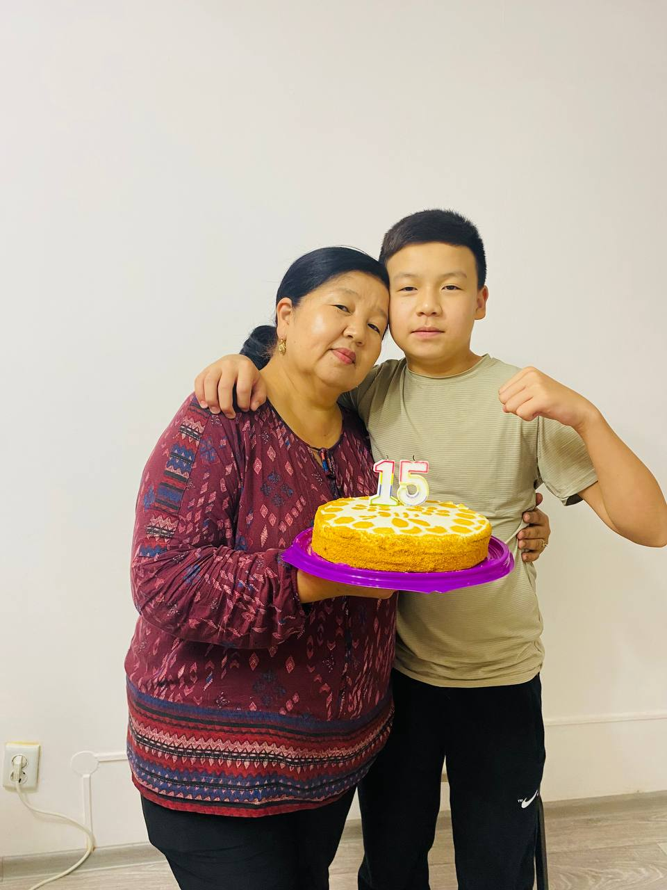
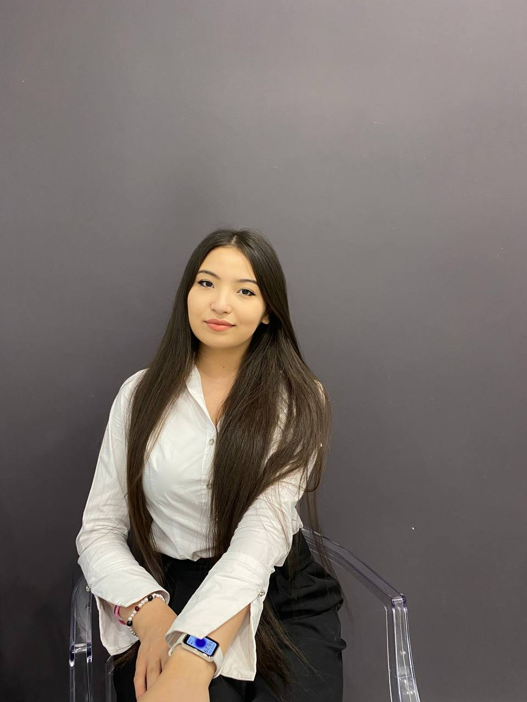

I have my father, mother, older sister, younger brother, and myself. We all live happily in Almaty nowadays.


Zhanar Isayevna, born in 1972 in Kuraksu, a village in Aksu kenti,
is my mother. She teaches the Kazakh language at a local school in Almaty.
Known for her kindness and helpful nature, she is also a strict yet loving parent.
Her punctuality and strong sense of responsibility are qualities I deeply admire.
Zhanara Isayevna
My father, Sultan Sydykov, was born in 1961. He served as a colonel
in Aksu kenti and is now retired. He has a passion for gardening and takes pride
in his work. My father is a very strict, straightforward person, always ready to take action.
He embodies the traits of discipline and integrity.
Sultan Sydykov

Bagdat Sultanova, my beautiful and accomplished sister, is 21 years old.
She is a journalist and the winner of several national and international competitions,
which I admire greatly. Currently, she works as a writer for "Ana Tili" and is a graduate of KazNU.
Despite being a demanding and strict individual, she is incredibly kind and loving to those close to her.
I truly love and respect her.
Bagdat Sultankyzy

Batyrkhan Biseken, my charming and charismatic younger brother,
is 15 years old and currently in the 9th grade.
He has a love for boxing and reading books,
and his gentlemanly nature never ceases to amaze me.
I am proud of the person he is becoming.
Batyrkhan Sultanuly

As for myself, I am 20 years old and a student at SDU University.
Like my mother and sister, I am kind, but I am also demanding and purposeful,
always striving to achieve my goals.
Zhanylkhan Sultan